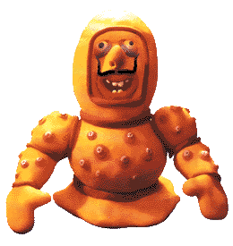
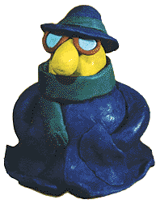
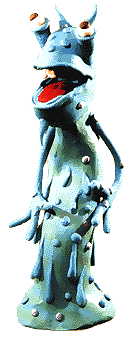
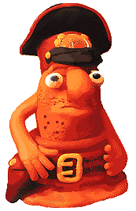

Микробиология для пациентов
Журнал «Men's Health» март 2001, стр. 88-92
(печатается с разрешения редакции)
Тим Шустер
ЧАЙ, КОФЕ, ПОТАНЦУЕМ?
На земле существует примерно 6 миллиардов людей, и мы уже всерьез озабочены проблемой перенаселенности нашей планеты. Хотя на каждого из нас приходится 8,5 гектаров абсолютно свободной территории: живи - не хочу. Если кому и есть о чем побеспокоиться, так это микробам. Общее их число выражается цифрой с двадцатью одним нулем: не то что представить - написать сложно. Но их проблема перенаселения почему-то совершенно не беспокоит, и они продолжают старательно размножаться.
Так что ты не можешь и шагу сделать, не встретив пару-тройку миллионов бактерий. Часть из которых немедленно бросается тебе на шею с объятиями. А примерно 100 миллиардов микробов вообще никогда с тобой не расстаются. Что им, спрашивается, уходить, когда с тобой так хорошо? У тебя идеальная температура тела, твои поры, железы и слизистые оболочки уютны и комфортабельны, ты исправно вырабатываешь вкусную пищу. Где еще жить, как не в тебе? Поэтому каждый сантиметр твоего тела кишит бактериями. В желудке, кишечнике, дыхательных путях, на глазных яблоках и головке пениса у тебя куда больше бактерий, чем на любой ручке общественного туалета. Прости за этот образ, но дело обстоит именно так.
Помывочные оргии с выливание на себя цистерн дезинфицирующих средств совершенно бессмысленны. Во-первых, большинству бактерий санитарные мероприятия никакого вреда не приносят, особенно тем, которые дислоцируются во внутренних органах и в глубоких порах. Во-вторых, многие бактерии не только не вредят твоему здоровью но, наоборот, защищают тебя. Например, те, которые живут коже и питаются твоим потом, умеют создавать кислую защитную пленку, препятствующую проникновению в организм других, действительны опасных микробов.
Запах от этих пограничников, конечно, тот еще, но надо признаться, дело свое они знают. А без бактерий, прописавшихся твоем кишечнике, ты бы вообще не смог жить. Если бы их не было, человек не сумел бы усвоить и переработать большую часть питательных веществ и скончался бы от дистрофии. (И вряд ли несчастного утешил бы тот факт, что его экскременты напоследок совершенно ничем не пахли.)
Так что с бактериями все обстоит далеко не так просто. Некоторые действительно способны только на подрывную и вредительскую деятельность, но таких меньшинство. А остальные могут вести себя как плохо, так и хорошо, в зависимости от их численности и условий проживания. Например, возбудитель язвы и гастрита, кишечный микроб хеликобактер пилори, безусловно, личность негативная. Он подгрызает стенки желудка и двенадцатиперстной кишки, делая их беззащитными перед едкой соляной кислотой. Но призыв «бей паразита» по отношению к хеликобактер пилори, однако, не всегда уместен. Потому что язва или гастрит развиваются лишь у 10% зараженных. А в 90% случаев хеликобактер вреда хозяину не приносит, а, наоборот занимается полезным делом - создает цепочки аминокислот-пептидов, которые уничтожают проникаюших в кишечник возбудителей опасных болезней.
Познакомься с 17 микробами, с которыми ты чаще всего вступаешь в контакт. Увидишь, большинство из них вовсе не такие уж монстры, какими их представляют в рекламе дезинфицирующих средств.
ЭКСТРЕМАЛЬНЫЙ ДАЙВИНГИСТ

Меня зовут: Helicobacter pylory
Профессия: возбудитель язвы желудка и двенадцатиперстной кишки.
Моя внешность: окруженное «скафандром» из ферментов овальное тельце с красивыми спиралевидными усами.
Мое любимое занятие: экстремальный дайвинг в соляной кислоте, вырабатываемой желудком, - среде, смертельно опасной для всех остальных бактерий.
Ты можешь встретить меня: в пищеварительной системе каждого второго европейца. В основном я обретаюсь в районе привратника желудка.
Я люблю: выедать дырки в слизистых кишечника и желудка.
Я ненавижу: программу иммунизации Европы против меня. К счастью, во многих странах министерства здравоохранения не спешат присоединяться к этой программе, поскольку еще верят в то, что не такой уж я страшный зверь.
Моя мечта: чтобы Австралию так никогда и не открывали. Именно там двадцать лет назад ученые впервые подловили меня на темных делишках и принялись изобретать средства для борьбы со мной.
ПАЛОЧКА-ВЫРУЧАЛАЧКА
Меня зовут: Escherichia coli
Профессия: участие в пищеварительном процессе.
Внешность: похож на колбаску.
Любимое занятие: я охотно сотрудничаю с микробиологами в их лабораториях. На данный момент меня уже изучили лучше любой другой бактерии в мире.
Ты можешь встретить меня: в толстом кишечнике - это прежде всего. А кроме того, в загрязненных воде и пище.
Я люблю: размножаться в продуктах, съеденных человеком, и способствовать перевариванию, попутно выискивая и уничтожая посторонних микробов.
Я ненавижу: антибиотики. При длительном их приеме можно уничтожить всю популяцию моих собратьев в организме, и восстановить нас будет не так-то просто.
Дурная сторона моей натуры: иногда я могу вызвать сильнейшее расстройство пищеварения - в тех случаях, когда с грязными едой или продуктами в организм проникает большое количество моих новых собратьев, которых иммунная система не признает за «своих».
НЕИСТРЕБИМЫЙ
Меня зовут: Pseudomonas aeruginosa
Профессия: борец за права микробов.
Внешность: худой, вытянутый, часто украшенный длинными усами.
Мое любимое занятие: заниматься сексом с другими микробами (обмениваясь с ними генетическим материалом) и мутировать, создавая новые, все более устойчивые штаммы.
Ты можешь встретить меня: во влажных местах - бойлерных, водопроводных трубах, стиральных машинах и даже в дезинфицирующих веществах. Я - единственная бактерия, которая в изобилии водится в любых больницах, потому что там со мной ничего не могут поделать.
Я люблю: проникать туда, куда меня не звали и где не ждали. Например, в глазные капли или в медицинские катетеры.
Я ненавижу: исследователей, которые то и дело пытаются спихнуть на меня вину за те или иные болезни. А я, может, ничего плохого и не хочу - только люблю гонки на выживание.
Моя мечта: победить Staphylococcus aureus и стать самой стойкой к антибиотикам бактерией в мире.
УБИЙЦА В МЕШОЧЕК
Меня зовут: Salmonella enteritidis
Профессия: возбудитель сальмонеллеза, вызываю расстройства желудка.
Моя внешность: овальное или вытянутое тельце с многочисленными длинными усиками.
Мое любимое занятие: внедряться в продукты и сидеть там в засаде.
Ты можешь встретить меня: в мясе, молоке, рыбе и яйцах.
Я люблю: вместе с испорченными или неправильно приготовленными продуктами проникать в организм и вызывать сильнейший понос.
Я ненавижу: температуру выше 75oС.
Моя мечта: чтобы человечество поголовно перестало есть яйца вкрутую и перешло на яйца всмятку.
СУПЕРМИКРОБ
Меня зовут: Enterococcus faecalis
Профессия: защитник среды твоего кишечника.
Моя внешность: маленький, бесформенный, соединенный группами по три-четыре штуки.
Мое любимое занятие: вместе с коллегами-смежникам добывать из пищи и поставлять в твой организм витамины группы В и ненасыщенные жирные кислоты.
Ты можешь встретить меня: в содержимом кишечника. В каждом миллилитре этого вещества - миллионы таких, как я.
Я люблю: подкислять среду своего обитания, чтобы в ней комфортно чувствовали себя все остальные хорошие бактерии.
Я ненавижу: антибиотики. Они меня просто убивают.
Моя мечта: получить Нобелевскую премию за то, что я сделал для здоровья человечества.
ТЕМНАЯ ЛИЧНОСТЬ

Меня зовут: Chlamydia pneumoniae
Профессия: секретный агент.
Моя внешность: очень маленький, круглый, надежно спрятанный внутри клеток.
Мое любимое занятие: внедряться в клетки, маскироваться там и атаковать исподтишка.
Ты можешь встретить меня: в органах, пораженных теми болезнями, причины которых еще недостаточно изучены.
Я люблю: загадки. Пока меня подозревают в том, что я являюсь виновником таких, казалось бы, разных заболеваний, как инфаркт, болезнь Альцгеймера, астма и рассеянный склероз. Но еще никто ничего не доказал.
Я ненавижу: исследователей вроде финна Пекка Сайкку, который сейчас пытается справиться с инфарктом при помощи антибиотиков.
Моя мечта: Спрятаться так, чтобы меня никто никогда не нашел.
НЕСПРАВЕДЛИВО ОБИЖЕННЫЙ
Меня зовут: Bacteroides gingivalis
Профессия: сторож ротовой полости.
Моя внешность: я бываю очень разным - иногда круглой, иногда овальной формы.
Мое любимое занятие: многие считают, что я являюсь основной причиной неприятного запаха изо рта. Более того, меня то и дело обвиняют в том, что я вызываю кариес. Мое любимое занятие - опровергать эти измышления и демонстрировать в лабораторных исследованиях до чего я полезный и безобидный.
Ты можешь встретить меня: на зубах, языке и деснах.
Я люблю: так заселять ротовую полость, чтобы в ней не смогли распространяться другие бактерии и грибы.
Я ненавижу: антибиотики, жидкость для полоскания рта и людей, которые готовы извести всех бактерий из ротовой полости подчистую.
Моя мечта: чтобы на меня, наконец, перестали нападать и признали меня лояльным гражданином человеческого организма.
ЗУБОДРОБИТЕЛЬ
Меня зовут: Streptococcus mutans
Профессия: специалист по кариесу.
Моя внешность: маленький и круглый.
Мое любимое занятие: поселяться в отложениях на зубах и портить эмаль.
Ты можешь встретить меня: в ротовой полости и глотке, но в самой большой концентрации на зубах и между ними.
Я люблю: сахар и остатки пищи, застрявшие между зубами. С их помощью я вырабатываю кислоту, которая разъедает зубную эмаль.
Я ненавижу: зубные щетки, зубную пасту, фтор. Ну и стоматологов, конечно, - я их боюсь ничуть не меньше, чем ты сам.
Моя мечта: чтобы не только влюбленные парочки, но и все люди при встрече начали обмениваться долгими, страстными поцелуями. Так я сумею завоевать целый мир.
ПРЫЩАВАЯ ЛИЧНОСТЬ
Меня зовут: Staphylococcus aureus
Профессия: полезная бактерия, защищающая кожу. Иногда, впрочем, я провоцирую воспаление.
Моя внешность: круглый шарик в кучке таких же шариков-микробов.
Мое любимое занятие: ухаживать за кислой защитной оболочкой твоей кожи.
Ты можешь встретить меня: всюду на коже. А кроме того, внутри фурункулов и прыщей, которые я порой вызываю.
Я люблю: постоянно мутировать, видоизменяться и увеличивать свою стойкость к антибиотикам, многие из которых не способны ничего со мной поделать.
Я ненавижу: людей с мощной иммунной системой - они не дают мне работать по совместительству, и у них я не способен вызвать ни малейшего прыщика.
Дурная сторона моей натуры: при попадании в раны или внутренние органы я привожу к серьезным воспалительным процессам.
ХОРОШИЙ ГРЯЗНУЛЯ
Меня зовут: Staphylococcus epidermidis.
Профессия: вышибала, удаляющий вредных посетителей с кожи.
Моя внешность: круглый, как шарик.
Мое любимое занятие: поддерживать целостность кислой среды кожи.
Ты можешь встретить меня: на любом миллиметре поверхности тела.
Я люблю: смотреть, как созданная мною кислая среда уничтожает залетевших на объект вредителей.
Я ненавижу: типов, повернутых стерильности и дезинфекции. Они сводят на нет все мои старания.
Моя мечта: Чтобы дети не слушались родителей и мылись пореже. И только рН-нейтральными средствами.
КХЕКАЛКА

Меня зовут: Mycobacterium tuberculosis
Профессия: возбудитель туберкулеза.
Моя внешность: тоненькая, порою искривленная палочка.
Мое любимое занятие: проникнув в организм, вести там паразитический образ жизни, потихоньку размножаясь.
Ты можешь встретить меня: у трети всего населения планеты - по большей части на коже и в легких.
Я люблю: компромиссные решения. Чаще всего я стараюсь, чтобы мои действия не причиняли фатального вреда организму и я мог спокойно жить в нем и дальше. Большинство людей, с которыми я сосуществую, никогда не заболевают туберкулезом. Но уж если я срываюсь с цепи, то превращаюсь в опаснейшего вредителя.
Я ненавижу: лекарства против туберкулеза, пробы Пирке и Манту, которые меня рассекречивают, и страну Швейцарию, в которой больше всего курортов для легочников.
Моя мечта: изобрести машину времени и перевести стрелки на сто лет назад, когда я был самым могущественным и ужасным микробом в мире. Тогда люди сочиняли про меня романы, драмы и оперы и никто не мог со мной справиться.
РАДОСТЬ ПОДРОСТКА
Меня зовут: Propionibacterium acnes
Профессия: безобидный обитатель кожи, правда, вызывающий иногда угревую сыпь.
Моя внешность: я могу иметь разную форму, но чаще всего мое тело похоже на палочку.
Мое любимое занятие: я занимаюсь семейным бизнесом, все мои родственники - специалисты по производству углекислоты, газа, который, например, делает дырочки в сыре.
Ты можешь встретить меня: в сальных железах и у волосяных луковиц.
Я люблю: иногда мне нравится забивать поры так, чтобы они воспалялись и превращались в угри и прыщи. Но чаще всего я абсолютно безвреден.
Я ненавижу: антибиотики и противоугревые мази.
Моя мечта: чтобы люди всегда оставались юными. Подростковый гормональный баланс открывает дорогу моим творческим способностям и помогает мне создавать высокохудожественные прыщи.
СОЛДАФОН
Меня зовут: Micrococcus sedentarius
Профессия: заставляю ноги пахнуть сыром.
Моя внешность: очень маленький, круглый, сцепленный парами.
Мое любимое занятие: выработка фермента, который разъедает ороговевшую кожу на ногах.
Ты можешь встретить меня: почти на всех ногах. Особенно на тех, которые ходят каждый день в одних и тех же ботинках.
Я люблю: синтетические носки.
Я ненавижу: тех, кто ходит босиком. А еще сандалии и ножные ванны с лечебными травами.
Моя мечта: тридцатикилометровый марш-бросок в сапогах при полной выкладке в жаркий день.
ПОТНЫЙ ТИП
Меня зовут: Corynebacterium xerosis
Профессия: произвожу запахи человеческого тела. Что с того, что они кому-то там не нравятся?
Моя внешность: среднего размера, овальный или вытянутый.
Мое любимое занятие: выстраиваться в длинные зигзагообразные цепочки и распластываться на влажной теплой местности.
Ты можешь встретить меня: на коже и на слизистых. Больше всего под мышками.
Я люблю: питаться потом и выделять дурно пахнущие вещества.
Я ненавижу: санитарно-гигиенические мероприятия и дезодоранты с дезинфицирующим эффектом.
Моя мечта: нервный спортсмен, который никогда не моется.
МОКРУШНИК
Меня зовут: Trichophyton rubrum
Профессия: запускать грибковые инфекции на ногах.
Моя внешность: очень изменяющаяся, я весь оброс длинными, переплетенными нитями.
Мое любимое занятие: сидеть на мокром полу и озираться, нет ли рядом чего-нибудь съедобного.
Ты можешь встретить меня: в душевых, в бассейне, в бане.
Я люблю: есть сопревшую кожу. Особенно мне нравится жить между пальцами ног, но сойдет и в других местах. Кроме того, я люблю вызывать зуд и раздражение.
Я ненавижу: сухие ноги, носки из натуральных тканей и клотримазол.
Моя мечта: запретить использование резиновых шлепанцев в душевых.
ЗНАТНЫЙ ГРИБНИК
Меня зовут: Candida albicans
Профессия: грибковые инфекции всех мастей.
Моя внешность: многоклеточные веточки с выростами.
Мое любимое занятие: разлагать мертвые клетки тела.
Ты можешь встретить меня: почти повсюду в организме - на коже, в кишечнике, под пластинками ногтей, во рту и порой даже в вагине и на головке пениса.
Я люблю: вызывать грибковые инфекции.
Я ненавижу: противогрибковые препараты, такие, как нистатин и клотримазол.
Моя мечта: избавиться от своей чудовищной репутации. На самом деле я вовсе не так уж плох и могу принести серьезные неприятности только людям с ослабленной иммунной системой.
ЗАЩИТНИК ЖЕНЩИН

Меня зовут: Lactobacillus acidophilus
Профессия: полицейский вагинальной флоры.
Моя внешность: похож на микроскопического червяка.
Мое любимое занятие: превращать молоко в простоквашу и квасить капусту - именно этим занимается большинство членов моего обширного семейства.
Ты можешь встретить меня: в кисломолочных и квашенных продуктах. А также в том месте, в которое тебя приводит половой инстинкт, поскольку я являюсь распространенным представителем вагинальной флоры.
Я люблю: создавать кислую среду и охотиться на вредных микробов, которых нелегкая занесла на охраняемую территорию.
Я ненавижу: антибиотики, особенно в виде вагинальных свечек. Одна такая свечка - и десяти процентам моих собратьев уже можно заказывать похоронный марш.
Моя мечта: чтобы меня самого научились производить в виде свечек и прописывали женщинам с обедненной флорой. Тем более что мужчин я тоже могу избавлять от опасных микробов, правда, очень недолго - лишь во время полового акта.